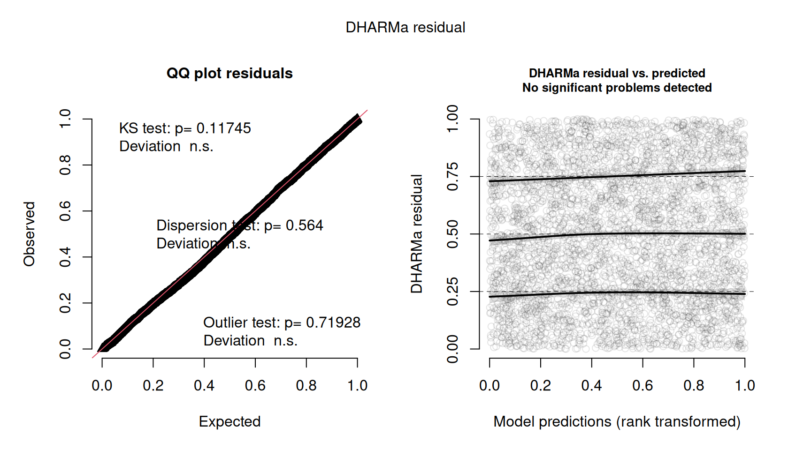
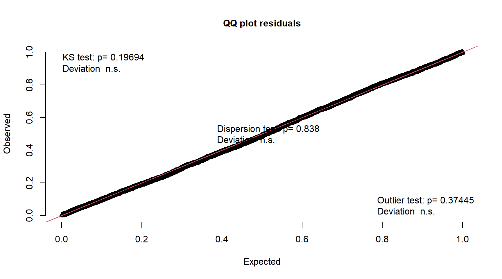
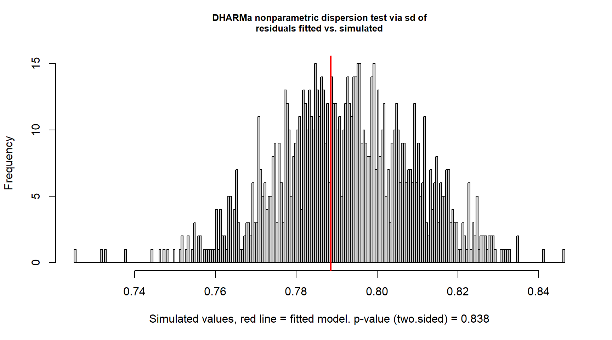
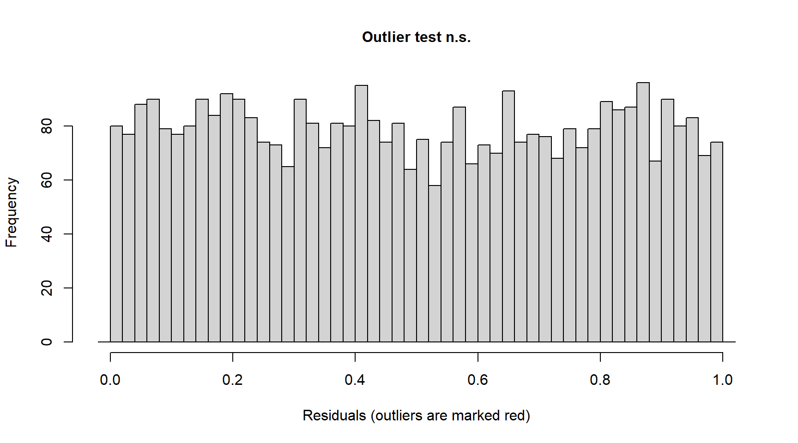
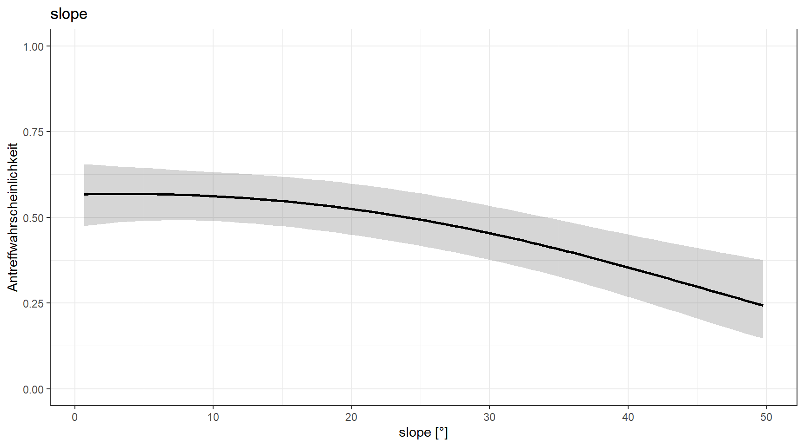

library(readr)
library(dplyr)
library(ggplot2)
library(glmmTMB)
library(MuMIn)
library(DHARMa)
library(ROCR)
library(performance)
library(cowplot)
options(scipen = 999)
vars_umwelt <- c(
"slope", "topo_pos", "dist_road_trails", "dist_road_only",
"dist_sett", "forest_prop", "us_2014", "os_2014"
)
# Identischer Datenpfad wie in Übung 5
DF_reh <- read_delim(
"datasets/fallstudie_n/Aufgabe_Multivariate_Modelle/Datensatz_Modelle_Habitatnutzung_Reh_261102.csv",
delim = ";"
)
stopifnot(all(c("pres_abs", "id", "time_of_day", vars_umwelt) %in% names(DF_reh)))
stopifnot(all(vapply(DF_reh[vars_umwelt], is.numeric, logical(1))))
stopifnot(all(na.omit(DF_reh$pres_abs) %in% c(0, 1)))
DF_reh$id <- factor(DF_reh$id)
DF_reh_day <- DF_reh |>
filter(time_of_day == "day")
# Wie in Übung 5: innerhalb des Tagesdatensatzes standardisieren.
DF_reh_day <- DF_reh_day |>
mutate(
slope_scaled = as.numeric(scale(slope)),
topo_pos_scaled = as.numeric(scale(topo_pos)),
us_scaled = as.numeric(scale(us_2014)),
os_scaled = as.numeric(scale(os_2014)),
forest_prop_scaled = as.numeric(scale(forest_prop)),
dist_road_trails_scaled = as.numeric(scale(dist_road_trails)),
dist_road_only_scaled = as.numeric(scale(dist_road_only)),
dist_sett_scaled = as.numeric(scale(dist_sett)),
slope_quadrat = slope_scaled^2,
dist_road_only_quadrat = dist_road_only_scaled^2,
forest_prop_quadrat = forest_prop_scaled^2
)
# Globale Modellformel aus dem Block Variablenselektion (unverändert)
m_global_day <- glmmTMB(
pres_abs ~ slope_scaled + slope_quadrat + topo_pos_scaled +
us_scaled + forest_prop_scaled + forest_prop_quadrat +
dist_road_only_scaled + dist_road_only_quadrat +
dist_sett_scaled + (1 | id),
data = DF_reh_day, family = binomial(), na.action = na.fail
)
# Dieselben Hierarchiebedingungen wie im Block Variablenselektion
all_m_global_day <- MuMIn::dredge(
m_global_day,
rank = "AICc",
subset = dc(slope_scaled, slope_quadrat) &
dc(dist_road_only_scaled, dist_road_only_quadrat) &
dc(forest_prop_scaled, forest_prop_quadrat)
)
# Exakt das Bestmodell aus dem Block Variablenselektion (Rang 1 nach AICc)
best_model_day <- MuMIn::get.models(all_m_global_day, subset = 1)[[1]]
summary(best_model_day)
## Family: binomial ( logit )
## Formula:
## pres_abs ~ dist_road_only_quadrat + dist_road_only_scaled + forest_prop_quadrat +
## forest_prop_scaled + slope_quadrat + slope_scaled + topo_pos_scaled +
## us_scaled + (1 | id)
## Data: DF_reh_day
##
## AIC BIC logLik -2*log(L) df.resid
## 4354.0 4416.8 -2167.0 4334.0 3954
##
## Random effects:
##
## Conditional model:
## Groups Name Variance Std.Dev.
## id (Intercept) 0.208 0.4561
## Number of obs: 3964, groups: id, 12
##
## Conditional model:
## Estimate Std. Error z value Pr(>|z|)
## (Intercept) 0.18495 0.14995 1.233 0.2174
## dist_road_only_quadrat -0.31030 0.02574 -12.056 < 0.0000000000000002 ***
## dist_road_only_scaled 0.97543 0.06641 14.688 < 0.0000000000000002 ***
## forest_prop_quadrat -0.33080 0.05458 -6.061 0.00000000135 ***
## forest_prop_scaled 0.91215 0.05610 16.260 < 0.0000000000000002 ***
## slope_quadrat -0.06945 0.03431 -2.024 0.0429 *
## slope_scaled -0.16009 0.06310 -2.537 0.0112 *
## topo_pos_scaled -0.07042 0.03799 -1.854 0.0638 .
## us_scaled 0.39713 0.04228 9.393 < 0.0000000000000002 ***
## ---
## Signif. codes: 0 '***' 0.001 '**' 0.01 '*' 0.05 '.' 0.1 ' ' 1
c(
AICc = MuMIn::AICc(best_model_day),
optimizer_code = best_model_day$fit$convergence,
positive_definite_hessian = isTRUE(best_model_day$sdr$pdHess)
)
## AICc optimizer_code positive_definite_hessian
## 4354.009 0.000 1.000Multivariate Modelle - Modellgüte, Diagnostik und Ergebnisdarstellung
Ziel und Einordnung
Wir führen die Modellierung der Reh-Habitatselektion aus den beiden vorangehenden Übungen fort: das in der Vorwoche ausgewählte Einzelmodell überprüfen, diagnostizieren und die Ergebnisse darstellen. Die theoretischen Grundlagen stammen vor allem aus Statistik 3 (Modellannahmen), Statistik 5 (GLMs), Statistik 6 (gemischte Modelle) und dem Überblick bis Statistik 8.
HinweisAUSFÜHREN & NACHVOLLZIEHEN
Übernehmt den vorgegebenen Code in euer eigenes R-Skript und beurteilt die Ergebnisse.
TippSELBST PROGRAMMIEREN
Hier entwickelt ihr den Code selbst. Die Musterlösungen werden eine Woche später auf der gerenderten GitHub-Seite freigeschaltet.
Vorbereitung – Das Bestmodell aus Übung 5 übernehmen
HinweisAUSFÜHREN & NACHVOLLZIEHEN
Wir arbeiten mit DF_reh_day und best_model_day aus dem Block Variablenselektion weiter. Dort wurde das globale Modell mit drei möglichen quadratischen Termen erstellt und mit dredge() nach AICc verglichen. Wenn ihr euer R-Skript aus dem letzten Block weiterführt, sind die Objekte bereits vorhanden.
Aufgabe 1 – Modellgüte: AUC und Pseudo-R²
Die beiden Kennzahlen beschreiben unterschiedliche Aspekte der Modellgüte:
Die AUC zeigt, wie gut das Modell zwischen genutzten (used) und verfügbaren (available) Stichprobenkreisen unterscheidet. Über die Herleitung der AUC findet ihr weiterführende Informationen unter: Link
Das Pseudo-R² nach Nakagawa beschreibt die erklärte Variation. Das marginale R² berücksichtigt nur die Fixed Effects, das konditionale R² zusätzlich die Random Effects.
TippSELBST PROGRAMMIEREN
AUC: Berechnet die AUC für best_model_day. Verwendet predict() mit type = "response" und re.form = NULL, damit die Vorhersagen für die untersuchten Rehe auch deren geschätzte Random Effects berücksichtigen. Nutzt danach ROCR::prediction() und ROCR::performance(..., "auc").
Pseudo-R²: Berechnet mit performance::r2_nakagawa() das marginale und das konditionale R² für dasselbe Modell. Wie unterscheiden sich die beiden Werte, und was bedeutet das für den Beitrag der Umweltvariablen und der Reh-ID?
Die AUC wird hier mit den zur Modellschätzung verwendeten Daten berechnet (keine Cross-Validation). Sie beschreibt daher die Trennschärfe innerhalb unseres Datensatzes. Das Pseudo-R² ist bei einem binomialen GLMM ein modellbasiertes Mass und nicht mit dem klassischen R² einer linearen Regression gleichzusetzen.
Aufgabe 2 – Residualdiagnostik mit DHARMa
HinweisAUSFÜHREN & NACHVOLLZIEHEN
Bei einem binomialen GLMM erwarten wir keine normalverteilten Residuen. Das Paket DHARMa prüft das Modell mit simulationsbasierten, skalierten Residuen. Für ein korrekt spezifiziertes Modell sollten sie näherungsweise gleichverteilt zwischen 0 und 1 sein.
set.seed(123)
simulationOutput <- DHARMa::simulateResiduals(
fittedModel = best_model_day,
n = 1000,
plot = FALSE
)
plot(simulationOutput)
DHARMa::testUniformity(simulationOutput)
##
## Asymptotic one-sample Kolmogorov-Smirnov test
##
## data: simulationOutput$scaledResiduals
## D = 0.017096, p-value = 0.1969
## alternative hypothesis: two-sided
DHARMa::testDispersion(simulationOutput)
##
## DHARMa nonparametric dispersion test via sd of residuals fitted vs.
## simulated
##
## data: simulationOutput
## dispersion = 0.9954, p-value = 0.838
## alternative hypothesis: two.sided
DHARMa::testOutliers(simulationOutput)
##
## DHARMa outlier test based on exact binomial test with approximate
## expectations
##
## data: simulationOutput
## outliers at both margin(s) = 5, observations = 3964, p-value = 0.3745
## alternative hypothesis: true probability of success is not equal to 0.001998002
## 95 percent confidence interval:
## 0.0004096805 0.0029411000
## sample estimates:
## frequency of outliers (expected: 0.001998001998002 )
## 0.001261352Eine Zero-Inflation-Prüfung ist bei einzelnen 0/1-Beobachtungen keine sinnvolle Routineentscheidung, weil eine zusätzliche Null-Komponente gegenüber der binomialen Wahrscheinlichkeit nicht unabhängig identifiziert werden kann.
Aufgabe 2.1 – Räumliche Autokorrelation (Vertiefung)
TippSELBST PROGRAMMIEREN – optional
GPS- und Rasterdaten können räumlich abhängig sein. Mit DHARMa::testSpatialAutocorrelation() lässt sich prüfen, ob benachbarte Stichprobenkreise ähnliche Residuen aufweisen, also ob eine räumliche Autokorrelation vorliegt. Verwendet für einen ersten Test nur die Beobachtungen eines einzelnen Rehs, damit das Problem überschaubar bleibt.
Hinweise: DHARMa::recalculateResiduals(simulationOutput, sel = ...), x, y sowie testSpatialAutocorrelation().
Aufgabe 2.2 – Multikollinearität im ausgewählten Modell
HinweisAUSFÜHREN & NACHVOLLZIEHEN
Im Übungsblock “Vorbereitung der Modellierung” habt ihr paarweise Korrelationen geprüft und letzte Woche habt ihr über die Prädiktoren entschieden. Hier prüfen wir die verbleibende Kollinearität im tatsächlich ausgewählten Modell. Die möglichen quadratischen Terme (slope_quadrat, dist_road_only_quadrat, forest_prop_quadrat) gehören zu den jeweiligen linearen Prädiktoren. Hohe Kollinearitätswerte zwischen einem linearen und seinem quadratischen Term sind deshalb gesondert zu beurteilen.
performance::check_collinearity(best_model_day)
## # Check for Multicollinearity
##
## Low Correlation
##
## Term VIF VIF 95% CI adj. VIF Tolerance Tolerance 95% CI
## dist_road_only_quadrat 2.43 [2.32, 2.56] 1.56 0.41 [0.39, 0.43]
## dist_road_only_scaled 2.45 [2.33, 2.58] 1.56 0.41 [0.39, 0.43]
## forest_prop_quadrat 1.07 [1.04, 1.11] 1.03 0.94 [0.90, 0.96]
## forest_prop_scaled 1.35 [1.30, 1.41] 1.16 0.74 [0.71, 0.77]
## slope_quadrat 1.70 [1.63, 1.78] 1.30 0.59 [0.56, 0.61]
## slope_scaled 2.10 [2.01, 2.20] 1.45 0.48 [0.45, 0.50]
## topo_pos_scaled 1.10 [1.07, 1.15] 1.05 0.91 [0.87, 0.93]
## us_scaled 1.15 [1.11, 1.20] 1.07 0.87 [0.84, 0.90]Aufgabe 3 – Modellresultate darstellen
Ein Modellkoeffizient eines binomialen GLMM beschreibt eine Veränderung der Log-Odds. Um einen ökologischen Zusammenhang anschaulich darzustellen, verwenden wir Response Curves. Also die modellierte Zuordnung zu Präsenz in Abhängigkeit eines Prädiktors, während die übrigen metrischen Prädiktoren auf einem Referenzwert bleiben (Mittelwerte aller standardisierten Variablen (jeweils 0)).
Wichtig bei quadratischen Termen: Falls das ausgewählte Modell einen quadratischen Term für slope, dist_road_only oder forest_prop enthält, muss dieser bei einer Vorhersage aus dem jeweiligen linearen Prädiktor neu berechnet werden. Andernfalls ist die Kurve falsch dargestellt.
HinweisAUSFÜHREN & NACHVOLLZIEHEN – Beispiel
slope
Die folgende Funktion erzeugt eine Response Curve auf der Originalskala. Für alle übrigen standardisierten Prädiktoren wird der Wert 0 (ihr Mittelwert im Datensatz) verwendet. Die quadratischen Terme werden passend dazu gesetzt. Individuelle Random Effects werden bei der Vorhersage auf 0 gesetzt (re.form = NA).
# Zuordnung: standardisierte Modellvariable -> ursprüngliche Umweltvariable
rohvariablen <- c(
slope_scaled = "slope",
topo_pos_scaled = "topo_pos",
us_scaled = "us_2014",
os_scaled = "os_2014",
forest_prop_scaled = "forest_prop",
dist_road_trails_scaled = "dist_road_trails",
dist_road_only_scaled = "dist_road_only",
dist_sett_scaled = "dist_sett"
)
plot_response <- function(modell, daten, variable) {
rohname <- unname(rohvariablen[[variable]])
# Alle anderen Umweltvariablen auf ihrem Mittelwert (skaliert = 0)
basis <- daten[1, , drop = FALSE]
basis[names(rohvariablen)] <- 0
basis[c("slope_quadrat", "dist_road_only_quadrat", "forest_prop_quadrat")] <- 0
# 80 Werte der gewählten Umweltvariable auf der Originalskala
nd <- basis[rep(1, 80), , drop = FALSE]
nd$x_original <- seq(min(daten[[rohname]]), max(daten[[rohname]]),
length.out = 80)
nd[[variable]] <- (nd$x_original - mean(daten[[rohname]])) /
sd(daten[[rohname]])
# Quadratische Terme passend zu den skalierten Werten berechnen
nd$slope_quadrat <- nd$slope_scaled^2
nd$dist_road_only_quadrat <- nd$dist_road_only_scaled^2
nd$forest_prop_quadrat <- nd$forest_prop_scaled^2
# Vorhersage auf Logit-Skala; anschliessend auf 0–1 umrechnen
vorhersage <- predict(modell, newdata = nd, type = "link",
se.fit = TRUE, re.form = NA)
nd$fit <- plogis(vorhersage$fit)
nd$unten <- plogis(vorhersage$fit - 1.96 * vorhersage$se.fit)
nd$oben <- plogis(vorhersage$fit + 1.96 * vorhersage$se.fit)
ggplot(nd, aes(x = x_original, y = fit)) +
geom_ribbon(aes(ymin = unten, ymax = oben), alpha = 0.2) +
geom_line(linewidth = 1) +
scale_y_continuous(limits = c(0, 1)) +
labs(x = rohname, y = "Antreffwahrscheinlichkeit", title = rohname) +
theme_bw()
}
# Eine einzelne Response Curve erstellen
p_slope <- plot_response(best_model_day, DF_reh_day, "slope_scaled") +
labs(x = "slope [°]")
p_slope
TippSELBST PROGRAMMIEREN – Weitere Response Curves und Multipanel
Erstellt die Response Curves für die übrigen Umweltvariablen im ausgewählten Modell. Verwendet dafür dieselbe Funktion und speichert die Grafiken einzeln, beispielsweise als p_strassen, p_wald, p_topo und p_us.
Gebt auf der X-Achse jeweils die Originalvariable mit ihrer Einheit an. Die Funktion berücksichtigt die quadratischen Terme automatisch; für diese werden keine separaten Kurven erstellt. Setzt anschliessend die einzelnen Plotobjekte mit cowplot::plot_grid() zu einer gemeinsamen Abbildung zusammen.
Tip für die weiteren Modelle: Ergänzt später die entsprechenden Response Curves des komplementären Modells (z. B. Nacht gegenüber Tag) in einer anderen Farbe. Für beide Modelle muss dieselbe Originalskala verwendet werden, aber jeweils die Standardisierung des betreffenden Modells.
Aufgabe 4 – Beitrag der Variablen: Leave-one-out
Der Leave-one-out-Vergleich untersucht, wie sich der AICc verändert, wenn ein Prädiktor aus einem ausgewählten Modell entfernt wird. Wir verwenden den gleichen Datensatz und die gleiche Random-Effect-Struktur. Ihr diesen Aspekt mit Coppes et al. (2017) abgleichen.
Bei slope, dist_road_only und forest_prop bilden der lineare und der gegebenenfalls enthaltene quadratische Term je einen gemeinsamen Block. Für den gesamten Effekt einer Umweltvariable entfernen wir beide Terme zusammen.
TippSELBST PROGRAMMIEREN
Erstellt zuerst ein reduziertes Modell ohne einen einzelnen Prädiktor, berechnet den AICc und vergleicht ihn mit dem vollständigen Modell. Übertragt das Vorgehen anschliessend auf die übrigen Modellvariablen. Falls für die gewählte Variable ein quadratischer Term im Modell vorkommt, entfernt den linearen und den quadratischen Term gemeinsam.
# AICc_voll <- MuMIn::AICc(best_model_day)
# formel_ohne <- update.formula(formula(best_model_day), . ~ . - ...)
# modell_ohne <- update(best_model_day, formula = formel_ohne)
# MuMIn::AICc(modell_ohne) - AICc_voll